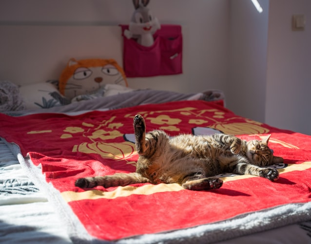
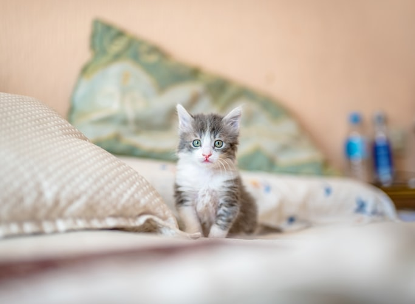

A Origem do Gato
Os primeiros animais mamíferos chamavam-se Creodontes e surgiram há cerca de 60 milhões de anos atrás, e floresceram admiravelmente após a extinção dos dinossauros.
O gato partilha com cães, ursos e outros mamíferos um ancestral comum - uma criatura pequena, semelhante à doninha, de corpo comprido e pernas curtas, chamada Miacis. Surgido dos creodontes há cerca de 50 milhões de anos e bem adaptado a uma época hostil da história do planeta, o Miacis evoluiu e prosperou, transformando-se na diversidade da moderna família de carnívoros que hoje conhecemos.
Uma das ramificações do Miacis produziu os primeiros "gatos", os Proailurus, que caminhavam com a planta dos pés no chão. Há cerca de 20 milhões de anos, o Proailurus deu lugar ao Pseudaelurus, que já caminhava nas pontas dos dedos e possuíam poderosos caninos afiados.
Do grupo dos Pseudaelurus emergiram os antepassados diretos do atual gato doméstico, os Felidae. Durante os milhões de anos seguintes, o Felidae subdividiram-se em muitas subespécies, todas extraordinariamente aparentadas com os gatos modernos.
Há doze milhões de anos atrás, , surgiu o Felis lunensis, espécie européia que se julga ser a antepassada direta da atual família de gatos selvagens, sendo menores que seus predecessores.
Nesta época, os gatos modernos dividiram-se em dois grupos, os do Velho Mundo e os do Novo Mundo.
Um grupo de felídeos selvagens, pequenos e independentes, espalhou-se então pela Ásia, Europa e África.
Parentes dos gatos contemporâneos, eram criaturas sofisticadas, construídas para sobreviverem. Pequenos, asseados, perfeitos carnívoros, os gatos de então já possuíam garras retráteis, que podem ser consideradas uma obra-prima da natureza, imprimindo maior velocidade na caça e contribuindo para um bote mortífero.
A dentição do gato também evoluiu com perfeição, com dentes preparados para segurar, furar, matar, cortar e reduzir a presa a pequenos pedaços facilmente engolidos.
Com a domesticação, outras mudanças se perpetuaram, tanto físicas quanto comportamentais. O cérebro diminuiu de tamanho, o sistema digestivo modificou-se para adaptar-se a outro tipo de alimentação, a pelagem tornou-se mais variada , e o temperamento bravio do gato sofreu uma alteração permanente, para adequar-se ao convívio com o homem.
Fonte: Planeta Gato
O Que Os Gatos Fazem Por Nós
Esquentam nosso colo e nos dão alguém para falar.
Ajudam a baixar a pressão.
Criam um elo entre você e as outras pessoas que têm gatos.
Transformam objetos comuns em brinquedos.
Nos faz mais atentas aos pássaros.
Funcionam como alarme.
Exibem acrobacias para você.
Contribuem para tornar sua vida mais longa.
Enfeitam o peitoril da janela.
Mantém os ratos longe.
Nos faz sorrir.
Inspira os poetas e escritores.
Nos ensina a ter os pés no chão.
Nos faz deixar nossos desejos em segundo plano em prol de alguém.
Aquecem nossas casas e nossos corações.
Nos lembram de como a vida é misteriosa.
Compartilham conosco o seu ronronar.
Nos instruem na arte de se espreguiçar.
Mostram-nos como levantar a poeira e dar a volta por cima.
Fazem com que até nosso sofá velho pareça bonito.
Abrem nossos corações.
Autoria Desconhecida

Qualidades do Gato
Quando Deus fez o mundo, escolheu enchê-lo de animais, e decidiu dar uma qualidade especial para cada um. Todos os animais formaram diante Dele uma longa fila, e o gato, calmamente, foi para o fim da fila.
Deus deu ao elefante e ao urso a Força, ao coelho e ao cervo a Velocidade, a Sabedoria à coruja, Beleza aos pássaros e borboletas, Esperteza para a raposa, Inteligência para o macaco, Lealdade para o cão, Coragem para o leão, Alegria para a lontra... Todas estas coisas os animais haviam pedido para ter.
Afinal, ao fim da fila, o pequeno gato sentou-se e esperou paciente. Deus perguntou-lhe: - O que terá você ?
Ao que o gato encolheu os ombros e respondeu: - Qualquer coisa me servirá. Eu não ligo.
E Deus disse: - Mas eu sou Deus ! Quero lhe dar algo especial !
E o gato, espertamente, respondeu: - Então me dê um pouco de tudo, por favor !
E Deus, rindo-se da enorme inteligência do animal, deu para o gato a soma de todas as qualidades dos animais, mais a graça e a elegância, e um gentil ronronar, para que ele sempre atraísse os homens e conquistasse seus lares.
Autoria Desconhecida
Carta de Um Gato para Um Cão
Querido Amigo Cachorro,
Lamento muito que te mandaram pro Canil Municipal pelo abajur que tu não quebraste, o peixe que tu não comeste, o tapete que tu não urinaste e pela parede que tu não sujaste com tinta vermelha. Mas minha dona se deu conta do trauma que tenho, por ter sido arrastado de casa até a beira de um barranco, o qual tive que saltar para que tu não me jantasse, e das vezes que tive que me esconder no banheiro para que tu não me encontrasse.
Enfim, as coisas aqui em casa estão muito mais tranqüilas, e para que vejas que não existem rancores, te mando uma foto minha, para que não me esqueças jamais. Fraternos abraços O Gato.
Manual dos Gatos
Faça do mundo o seu playground.
Sempre que não der tempo de ir até a caixa sanitária, cubra com qualquer coisa! Meias resolvem satisfatoriamente.
Quando estiver com fome mie bem alto! Eles o alimentarão apenas para fazê-lo ficar quieto.
Sempre encontre algum raio de sol e cochile nele.
Cochile sempre.
Quando estiver encrencado, apenas ronrone e faça cara de "lindinho".
A vida é muito difícil, então cochile.
A curiosidade nunca matou nada, a não ser umas poucas horas.
Quando na dúvida, finja saber o que está fazendo.
O tempero da vida é variar. Um dia, ignore as pessoas, no outro as chateie.
Suba na vida, é para isso que as cortinas servem.
Deixe sua marca no mundo, ou ao menos borrife em cada canto.
Seja sempre generoso, um passarinho ou camundongo deixado na cama diz a eles " eu me importo".
Autoria Desconhecida
